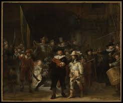

Rembrandt van Rijn
Dutch Baroque Painter & PrintmakerRembrandt van Rijn was a master of light and shadow, revered for his deeply human portraits and historic scenes. His works capture emotion, psychological depth, and dramatic composition, making him one of the most influential figures in European art.
Masterwork

The Night Watch (1642)
Medium: Oil on canvas
Dimensions: 363 cm × 437 cm
The Night Watch is a revolutionary group portrait that captures the dramatic movement of the Amsterdam militia led by Captain Frans Banning Cocq. Unlike traditional static poses, Rembrandt’s composition creates a narrative scene with intense contrasts and masterful use of chiaroscuro. It remains one of the Netherlands' most treasured national paintings.